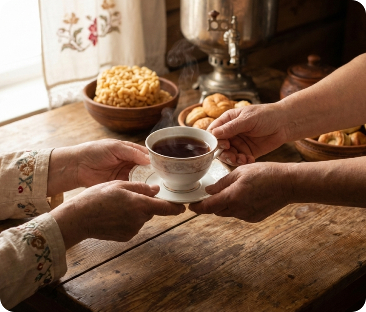
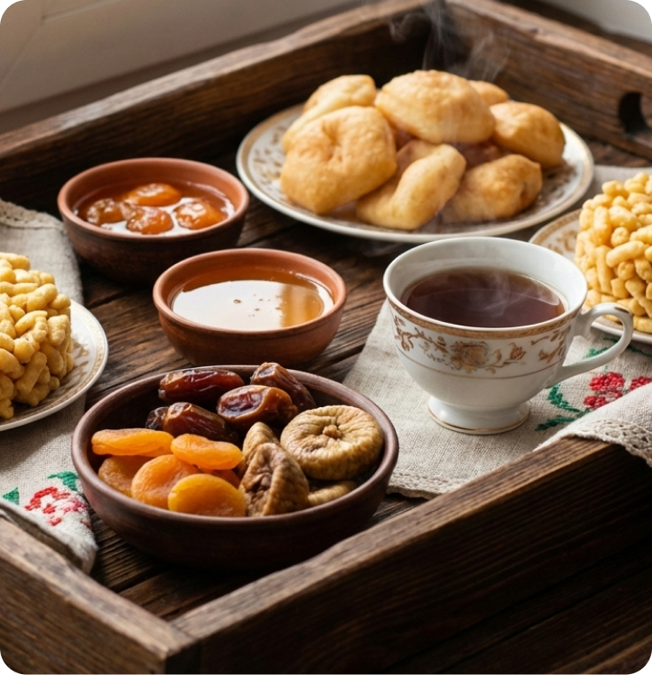

Секреты ароматного чая по-татарски
У татар чай — это не просто напиток. Это знак внимания, повод остановиться и разделить время с близкими.
Чай объединяет поколения, сопровождает важные встречи и наполняет дом ощущением тепла. Его аромат — часть культуры, а сам процесс чаепития имеет свой ритм и смысл.
Один из главных секретов татарского чая — насыщенный настой. Чай заваривают крепким, часто в отдельном чайнике, позволяя листу полностью раскрыться. Такой способ даёт глубину вкуса и делает аромат выразительным. Уже за столом каждый гость может разбавить чай горячей водой, подбирая комфортную крепость.
«Чай заваривают крепко, чтобы вкус можно было почувствовать, а не угадывать». Крепость здесь — не про резкость, а про характер. Чай остаётся мягким, но насыщенным, согревающим и долгим на вкус.


“Аромат чая начинается ещё до первого глотка”
В татарской традиции чай всегда подают горячим. Считается, что именно тепло помогает аромату раскрыться полностью. Чай не пьют наспех — ему дают время, а первому глотку всегда предшествует вдох.
Тёплый чай создаёт ощущение уюта, расслабляет и настраивает на разговор. Это часть негласного правила: за чаем не спешат.
И, конечно, самый главный секрет — разговор. Чай по-татарски не пьют на бегу. Его пьют, чтобы слушать, рассказывать и быть рядом. Потому что настоящий аромат чая раскрывается только там, где есть внимание и уважение к моменту.
Чай должен быть чистым — тогда он говорит сам за себя.
К чаю по-татарски всегда подают угощения: мёд, варенье, сухофрукты или или традиционные сладости, выпечку. Но их не кладут в чай. Сладость пробуют отдельно, сохраняя чистоту вкуса напитка.
В татарских семьях особенно ценят мёд — густой, ароматный, собранный в тёплое лето. Его берут понемногу, чтобы лишь оттенить вкус чая, а не заглушить его. Рядом может стоять варенье — чаще всего из ягод или фруктов, сваренное так, чтобы сохранить натуральный вкус.
Выпечка и национальные сладости тоже имеет своё место. Чак-чак, талкыш калеве, праздничная губадия, эчпочмак — всё это подают как сопровождение, а не как главное угощение. Сначала чай. Потом — сладость. И снова чай.
Такой порядок неслучаен. Он учит чувствовать вкус, замечать нюансы и не смешивать всё сразу. Чай остаётся чистым и выразительным, а сладости лишь подчёркивают его характер, не перебивая аромат.

“Татарский чай заваривают не для спешки — его заваривают для разговора”
Самый важный секрет татарского чая — разговор. Чаепитие редко бывает коротким. За столом делятся новостями, слушают друг друга, вспоминают и обсуждают. Чай становится фоном для общения, но именно он задаёт его ритм.
Здесь нет суеты, нет лишних движений. Есть внимание, паузы и уважение к моменту. Именно поэтому татарское чаепитие никогда не бывает формальностью.
Аромат татарского чая — это не только запах заварки. Это тепло дома, неспешные разговоры и чувство, что вам рады. Он остаётся в памяти надолго, потому что связан не с вкусом, а с ощущением.
И, возможно, в этом и кроется главный секрет: чай по-татарски — это не рецепт, а состояние. Его невозможно повторить в спешке, но легко почувствовать там, где есть внимание и искренность.